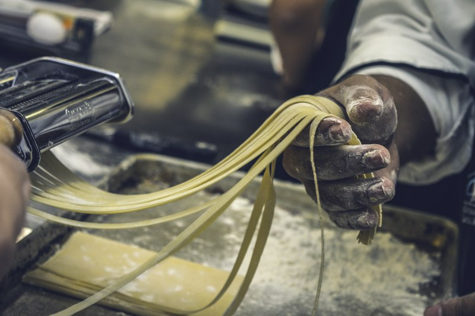

Newsletter semanal
Únete a nuestra comunidad
Recibe tips semanales de cocina italiana: lo que se hace en casa un domingo, no lo que sale en los restaurantes.
Qué llega cada domingo
Tres cosas, un correo, siete minutos de lectura.
-

La receta
Cantidades para cuatro, tiempos reales de cocina y el punto exacto donde la mayoría se equivoca.
-

El truco
Un gesto concreto —el agua de la cocción, el orden del sofrito— explicado en tres líneas.
-

El producto
Qué está de temporada, cómo elegirlo en el mercado y cuánto debería costarte.